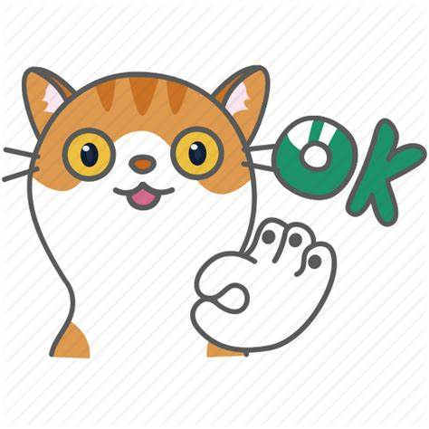

<!DOCTYPE html>
<html lang="en">
  <head>
    <meta charset="UTF-8" />
    <meta name="viewport" content="width=device-width, initial-scale=1.0" />
    <meta http-equiv="X-UA-Compatible" content="ie=edge" />
    <title>Render Props</title>
    <style type="text/css">
      .catImage {
        height: 80px;
        width: 80px;
      }
    </style>
  </head>
  <body>
    <div id="app"></div>

    <script src="https://cdn.jsdelivr.net/npm/react@16.13.0/umd/react.development.js"></script>
    <script src="https://cdn.jsdelivr.net/npm/react-dom@16.13.0/umd/react-dom.development.js"></script>
    <script src="https://cdn.jsdelivr.net/npm/@babel/standalone@7.8.6/babel.min.js"></script>
    <script type="text/babel">
      /// Use Render Props for Cross-Cutting Concerns

      // 定义一个组件，跟踪 WEB 应用程序中的鼠标位置
      // 在 Example02 的重构效果来看，还不是真正的可复用
      // 假设我们有一个 `<Cat>` 组件，它可以呈现一张在屏幕上追逐鼠标的猫的图片，
      // 我们或许会使用 `<Cat mouse={{ x, y }}>` prop 来告诉组件鼠标的坐标，
      // 以让它知道图片应该在屏幕哪个位置
      // 首先，或许尝试在 `<Mouse>` 内部的渲染方法渲染 `<Cat>` 组件
      class Cat extends React.Component {
        render() {
          const mouse = this.props.mouse
          return 
        }
      }

      class MouseWithCat extends React.Component {
        constructor(props) {
          super(props)
          this.state = {
            x: 0,
            y: 0
          }
          this.handleMouseMove = this.handleMouseMove.bind(this)
        }

        handleMouseMove(e) {
          this.setState({
            x: e.clientX,
            y: e.clientY
          })
        }

        render() {
          return (
            <div style={{ height: "100%" }} onMouseMove={this.handleMouseMove}>
              {/* 
                We could just swap out the <p> for a <Cat> here ... but then we could need to create
                a separate <MouseWithSomethingElse> component every time we need to use it, so <MouseWithCat>
                isn't really reusable yet.  
              */}
              <Cat mouse={ this.state } />
            </div>
          )
        }
      }

      class MouseTracker extends React.Component {
        render() {
          return (
            <div>
              <h1>Move the mouse around</h1>
              <MouseWithCat />
            </div>
          )
        }
      }

      ReactDOM.render(<MouseTracker />, document.querySelector("#app"))

      // 这种方式适用于我们的特例，但还是没有达到以可复用的方式真正封装行为的目标。

    </script>
  </body>
</html>
